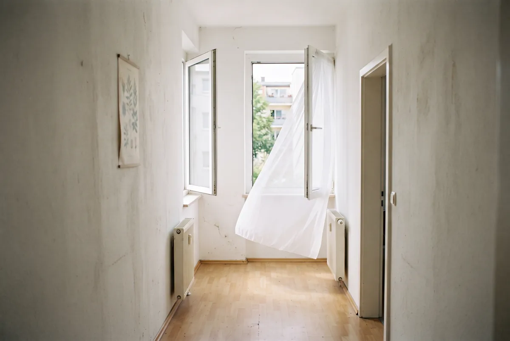
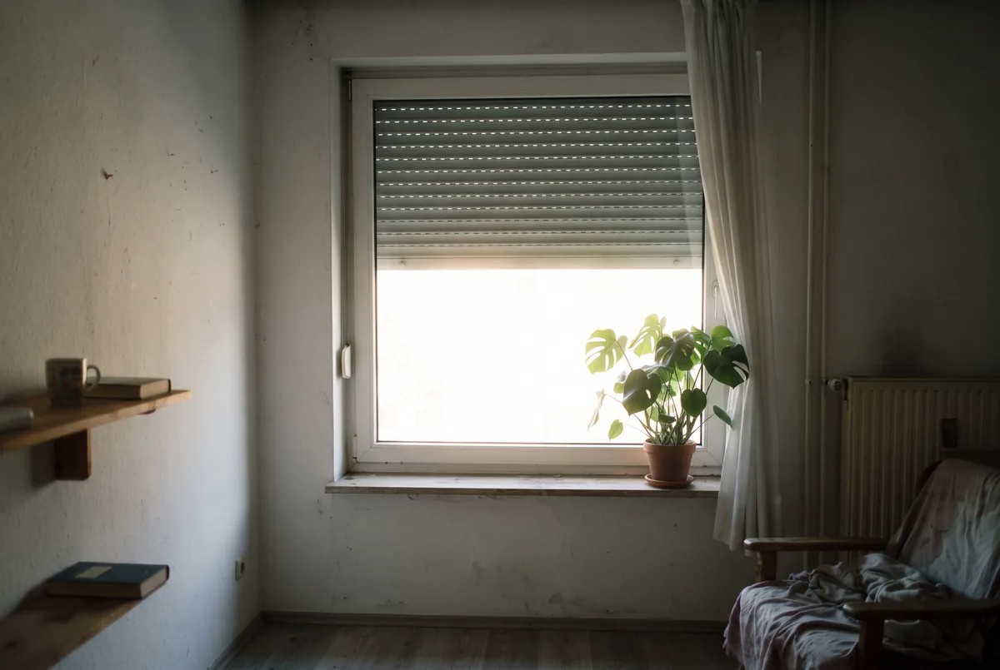
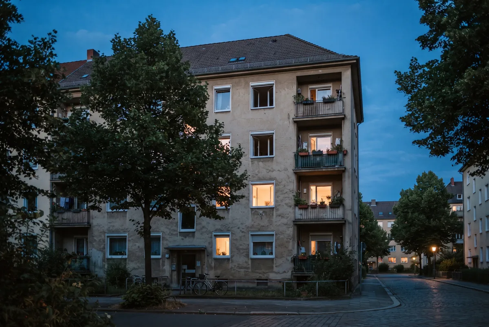

Inhaltsverzeichnis
- Fenster auf oder zu? Das Kernproblem bei Hitze
- Das Grundprinzip in einem Satz
- Schritt 1: nachts und frühmorgens intensiv lüften
- Schritt 2: querlüften statt Kippstellung
- Schritt 3: tagsüber Fenster schließen und verschatten
- Schritt 4: Wärmequellen und Luftfeuchte im Blick behalten
- Sonderfälle: Dachgeschoss, einseitige Fenster, Stadtlage
- Häufige Fehler und wie Sie sie vermeiden
- Die 0-Euro-Sofort-Checkliste
- Fazit und nächster Schritt
- Häufige Fragen
Das Wichtigste in Kürze
- Die eine Regel: Nur lüften, wenn es draußen kühler und trockener ist als drinnen. Nicht nur die Temperatur zählt, sondern auch die Luftfeuchte.
- Nachts und frühmorgens: Die kühle Nachtluft ist der wirksamste kostenlose Hebel. Fenster mehrere Stunden offen lassen, kurz vor Sonnenaufgang das größte öffnen.
- Querlüften schlägt Kippen: Gegenüberliegende Fenster weit auf – wenige Minuten Durchzug bringen mehr als stundenlange Kippstellung.
- Tagsüber dicht: Sobald außen wärmer als innen, Fenster schließen und außenliegend verschatten. Außenliegender Sonnenschutz ist der wirksamste Gratis-Schutz.
- Schwüle Nächte sind die Ausnahme: Ist die Außenluft warm und sehr feucht, kann Lüften mehr schaden als nützen – dann besser geschlossen halten.
- Thermometer und Hygrometer innen wie außen sind die einfachste Entscheidungshilfe – zuverlässiger als das Gefühl.
Fenster auf oder zu? Das Kernproblem bei Hitze
An einem Hitzetag stehen die meisten Menschen früher oder später ratlos vor dem Fenster. Draußen brennt die Sonne, drinnen wird die Luft stickig – die naheliegende Reaktion ist, das Fenster aufzureißen, um frische Luft hereinzulassen. Genau das ist im Hochsommer aber häufig der Fehler. Solange es draußen wärmer ist als in Ihren Räumen, strömt mit jeder Minute zusätzliche Wärme herein, die Sie hinterher nicht mehr loswerden.
Das Missverständnis entsteht, weil wir Lüften mit Abkühlung gleichsetzen. Im Winter stimmt das auch: Kalte Frischluft ersetzt die verbrauchte, warme Raumluft. Im Sommer kehrt sich die Logik um. Jetzt ist die Raumluft oft der kühlere Teil, und ein offenes Fenster wird zum Einfallstor für die Hitze. Die Verbraucherzentrale bringt es auf den Punkt: Gelüftet wird erst, sobald die Außenluft kühler ist als die Innenluft – und das ist an heißen Tagen meist nur nachts und in den frühen Morgenstunden der Fall.
Hinzu kommt ein zweiter Faktor, den viele übersehen: die Luftfeuchtigkeit. Nicht jede kühlere Nacht ist auch eine trockene Nacht. Warme, feuchte Außenluft kann die Belastung in der Wohnung sogar erhöhen, statt sie zu senken. Richtiges Lüften bei Hitze ist deshalb kein starres „morgens einmal durchlüften", sondern eine Frage des richtigen Zeitpunkts – abhängig von Temperatur und Feuchte gleichermaßen. Die gute Nachricht: Das Prinzip dahinter passt in einen einzigen Satz.
Das Grundprinzip in einem Satz
Öffnen Sie die Fenster nur dann, wenn die Außenluft kühler und trockener ist als die Luft in Ihren Räumen. Dieser eine Satz ersetzt jede Faustregel nach der Uhr. Denn nicht die Tageszeit entscheidet, sondern das Verhältnis zwischen drinnen und draußen.
Warum die Feuchte genauso zählt wie die Temperatur, lässt sich einfach erklären. Kühlere Luft fühlt sich nur dann angenehm an, wenn Ihr Körper Wärme über verdunstenden Schweiß abgeben kann. Ist die Außenluft feucht-warm, gelingt das schlecht: Die Haut bleibt klamm, und an kühleren Flächen im Raum kann die eingebrachte Feuchtigkeit sogar kondensieren. Ein Thermometer allein reicht deshalb nicht – erst zusammen mit einem Hygrometer, das die Luftfeuchtigkeit misst, treffen Sie die richtige Entscheidung.
In der Praxis heißt das: Stellen Sie je ein Thermometer und ein Hygrometer nach innen und nach außen, zum Beispiel auf die Fensterbank und auf den Balkon. Zeigt das Außengerät niedrigere Werte bei Temperatur und Feuchte, ist Ihr Lüftungsfenster geöffnet – im wörtlichen wie im übertragenen Sinn. Steigt außen einer der beiden Werte über den Innenwert, bleibt das Fenster zu. Die folgenden vier Schritte übersetzen dieses Prinzip in einen konkreten Tagesablauf.
Schritt 1: nachts und frühmorgens intensiv lüften
Die Nachtlüftung ist der wirksamste kostenlose Hebel gegen sommerliche Hitze, und die Verbraucherzentrale nennt sie aus gutem Grund an erster Stelle. Über den Tag speichern Wände, Decken und Böden Wärme wie ein Akku. Nachts, wenn die Außenluft absinkt, lässt sich diese gespeicherte Wärme über die geöffneten Fenster abführen – vorausgesetzt, es ist draußen tatsächlich kühler geworden.
Warten Sie damit bewusst, bis die Hitze aus der Luft ist. Nach einem heißen Tag kann das weit nach Sonnenuntergang sein, weil auch im Freien die Wärme mehrere Stunden nachhängt. Sobald der Umschlagpunkt erreicht ist, öffnen Sie die Fenster weit und lassen sie über die Nacht offen. Kurz vor Sonnenaufgang, wenn die Außenluft am kühlsten ist, lohnt es sich, noch einmal das größte Fenster ganz zu öffnen und den letzten kühlen Schub mitzunehmen – bevor die Sonne die Temperatur wieder nach oben treibt.
Besonders profitiert das Schlafzimmer davon, denn erholsamer Schlaf gelingt in einem ausgekühlten Raum deutlich leichter. Wer nachts nicht regeneriert, geht mit einem Defizit in den nächsten Hitzetag. Achten Sie bei geöffneten Fenstern auf Einbruchschutz und Insekten – dazu mehr im Abschnitt zu den Sonderfällen.
Schritt 2: querlüften statt Kippstellung
Ein gekipptes Fenster fühlt sich nach Lüften an, tauscht aber kaum Luft aus. Über den schmalen Spalt bewegt sich über Stunden nur wenig, und tagsüber lässt die Kippstellung sogar unnötig Wärme herein. Wesentlich wirksamer ist das Querlüften: Sie öffnen gegenüberliegende Fenster – idealerweise in verschiedenen Räumen – gleichzeitig weit, sodass ein kräftiger Durchzug quer durch die Wohnung zieht.
Der Effekt ist enorm: Wenige Minuten Durchzug tauschen die komplette Raumluft aus, wofür bei gekipptem Fenster Stunden nötig wären. In einem Haus oder einer Wohnung über mehrere Etagen kommt ein zweiter Mechanismus hinzu. Öffnen Sie Fenster unten und oben, steigt die wärmere Luft nach oben und zieht ab, während unten kühle Luft nachströmt – dieser Kamineffekt verstärkt die Nachtauskühlung zusätzlich.
Fehlt Ihnen für echten Durchzug das gegenüberliegende Fenster, hilft ein Ventilator. Am offenen Fenster so aufgestellt, dass er die warme Innenluft nach draußen bläst, beschleunigt er den Luftaustausch spürbar. Wichtig zur Einordnung: Ein Ventilator senkt nicht die Raumtemperatur, sondern unterstützt entweder den Luftwechsel oder kühlt über den Luftzug direkt Ihre Haut. Beides ist nützlich, ersetzt aber nicht das Grundprinzip aus Schritt 1.
Gut zu wissen: Kippen ist im Sommer die schlechteste aller Stellungen. Nachts tauscht es zu wenig Luft, tagsüber lässt es unbemerkt Wärme herein. Entscheiden Sie sich klar: entweder weit auf für den Durchzug – oder ganz zu.
Schritt 3: tagsüber Fenster schließen und verschatten
Sobald morgens die Außentemperatur über die Innentemperatur klettert, gilt das Gegenteil des nächtlichen Programms: Fenster schließen und geschlossen halten. Im Hochsommer ist dieser Umschlagpunkt oft schon in den ersten Vormittagsstunden erreicht. Jedes Fenster, das danach offen oder gekippt bleibt, arbeitet gegen Sie und lässt Wärme herein, die Sie nachts wieder mühsam hinauslüften müssen.
Genauso entscheidend wie das Schließen ist das Verschatten. Der größte Teil der sommerlichen Wärme kommt nicht durch die Wand, sondern als Sonnenstrahlung durch das Glas. Deshalb gehört der Sonnenschutz herunter, bevor die Sonne direkt auf das Fenster trifft – bei Ostfenstern früh am Morgen, bei Südfenstern über Mittag, bei Westfenstern spätestens am frühen Nachmittag. Wer erst zuzieht, wenn der Raum schon aufgeheizt ist, hat den entscheidenden Moment verpasst.
Dabei ist außenliegender Sonnenschutz – Rollladen, Raffstore, Markise oder außen angebrachtes Sonnensegel – dem innenliegenden klar überlegen. Er fängt die Strahlung ab, bevor sie die Scheibe passiert, sodass die Wärme gar nicht erst in den Raum gelangt. Innenliegende Rollos und Vorhänge können das prinzipbedingt nicht leisten, weil die Energie das Glas bereits durchdrungen hat. Sie sind die Notlösung, wenn außen nichts möglich ist – der wirksamste kostenlose Schutz ist und bleibt die konsequente Verschattung von außen.
Unser Tipp: Hitzeschutz für Fenster im Vergleich: Rollladen, Raffstore, Folie und Sonnenschutzglas nebeneinander.

Schritt 4: Wärmequellen und Luftfeuchte im Blick behalten
Das beste Lüftungsverhalten läuft ins Leere, wenn die Wohnung sich von innen aufheizt. Jedes elektrische Gerät gibt seine Leistung am Ende als Wärme an den Raum ab. Backofen, Wäschetrockner, Herd, aber auch scheinbar harmlose Dauerläufer wie Router, Spielkonsole und Netzteile im Standby summieren sich an einem Hitzetag zu einer spürbaren Zusatzheizung. Trocknen Sie Wäsche auf dem Balkon statt im Zimmer, kochen Sie kalt oder kurz, und nehmen Sie Geräte, die Sie nicht brauchen, vom Netz.
Der zweite Punkt betrifft die Luftfeuchte, die beim Lüften leicht in Vergessenheit gerät. Feucht-warme Nächte sind der Grund, warum die reine Temperatur nicht ausreicht. Ein Blick auf das Hygrometer verrät, ob die kühlere Außenluft auch trockener ist. Vermeiden Sie zusätzlich hausgemachte Feuchtequellen an Hitzetagen: Große Mengen Wasser auf dem Herd, feuchte Tücher zum vermeintlichen Kühlen oder Wäsche im Raum erhöhen die Luftfeuchtigkeit und machen die Hitze subjektiv unangenehmer, weil der Schweiß schlechter verdunstet.
Wer beide Faktoren – interne Wärmelasten und Feuchte – im Blick behält, holt aus dem kostenlosen Lüftungsprogramm das Maximum heraus. Es ist die Feinabstimmung, die den Unterschied zwischen „gefühlt bringt es nichts" und einer spürbar kühleren Wohnung ausmacht.
Reicht Lüften bei Ihnen nicht mehr aus?
Wenn die Räume trotz konsequenter Nachtlüftung heiß bleiben, liegt es am Gebäude. Wir sehen es uns an, benennen den größten Hitzeschutz-Hebel und prüfen, was davon gefördert wird.
Kostenlose ErsteinschätzungSonderfälle: Dachgeschoss, einseitige Fenster, Stadtlage
Nicht jede Wohnung folgt dem Lehrbuch. Drei Konstellationen verdienen eine eigene Strategie. Am stärksten betroffen sind Dachgeschosswohnungen. Die Dachfläche nimmt die Sonne über den ganzen Tag auf, und bei einem schlecht gedämmten Dach wandert diese Wärme mit einigen Stunden Verzögerung in den Wohnraum – oft heizt sich der Raum am Abend noch weiter auf. Für Dachwohnungen ist die Nachtlüftung deshalb besonders wichtig, und außenliegende Rollläden oder Markisen an den Dachflächenfenstern sind hier häufig der größte einzelne Hebel.
Die zweite Konstellation sind einseitige Fenster: Wohnungen, deren Fenster alle zu derselben Seite zeigen, sodass echtes Querlüften nicht möglich ist. Hier fehlt der Durchzug, der die Wohnung schnell auskühlt. Ein Ventilator, der am geöffneten Fenster die warme Innenluft nach draußen bläst, schafft Abhilfe, weil er den Luftwechsel erzwingt, den die Bauweise nicht hergibt. Auch offene Innentüren helfen, die kühle Luft in der Wohnung zu verteilen.
Der dritte Sonderfall ist die Stadtlage. In dicht bebauten Innenstädten speichern Asphalt und Mauerwerk die Tageshitze und geben sie nachts wieder ab – der bekannte Wärmeinsel-Effekt, auf den auch der „Hitzeknigge" des Umweltbundesamtes hinweist. Die Nacht kühlt hier weniger stark ab als auf dem Land. Das gute Lüftungsfenster verschiebt sich dadurch nach hinten und wird kürzer; oft lohnt sich das Öffnen erst in den frühen Morgenstunden. Umso wichtiger wird tagsüber die konsequente Verschattung.
Ein Wort zur Sicherheit über Nacht: Wer im Erdgeschoss wohnt oder Fenster gut erreichbar hat, muss beim stundenlangen Offenlassen den Einbruchschutz mitdenken. Abschließbare Fenstergriffe, kippbare Sicherungen oder aufschraubbare Zusatzverriegelungen erlauben das Lüften, ohne die Wohnung offen stehen zu lassen. Ein Fliegengitter hält zugleich Insekten draußen, ohne den Luftstrom nennenswert zu bremsen.

Häufige Fehler und wie Sie sie vermeiden
Die meisten Lüftungsfehler im Sommer entstehen aus Gewohnheit. Der häufigste ist das Lüften am späten Vormittag: Wer um acht oder neun Uhr „einmal richtig durchlüftet", holt an einem Hitzetag bereits warme Luft herein und macht die mühsam erreichte Nachtkühlung zunichte. Die Frischluft-Routine aus dem Winter gehört im Hochsommer schlicht nach hinten in die Nacht verlegt.
Fehler Nummer zwei ist das dauerhaft gekippte Fenster. Es fühlt sich nach permanenter Frischluft an, tauscht nachts aber zu wenig aus und lässt tagsüber Wärme herein – die schlechteste Kombination. Besser: nachts weit auf, tagsüber ganz zu.
Der dritte Fehler ist, sich nur auf die Temperatur zu verlassen und die Luftfeuchte zu ignorieren. Eine Nacht kann angenehm kühl wirken und trotzdem so feucht sein, dass Lüften die Belastung erhöht. Ein Hygrometer kostet wenig und verhindert genau diesen Fehlgriff.
Fehler vier betrifft den Sonnenschutz zur falschen Zeit: erst zuziehen, wenn der Raum bereits aufgeheizt ist. Dann ist die Wärme schon drin. Der Sonnenschutz muss herunter, bevor die Sonne das Fenster erreicht. Und schließlich unterschätzen viele die internen Wärmequellen – Backofen, Trockner und Standby-Geräte heizen die Wohnung von innen, ganz gleich, wie diszipliniert gelüftet wird.
Die 0-Euro-Sofort-Checkliste
Alles Wesentliche in einer Reihenfolge, die Sie ab heute Nacht ohne einen Cent umsetzen können:
- Abends prüfen: Ist es draußen kühler und trockener als drinnen? Thermometer und Hygrometer innen wie außen geben die Antwort.
- Nachts weit öffnen: Sobald die Außenluft abgekühlt ist, gegenüberliegende Fenster weit auf und mehrere Stunden Durchzug erzeugen.
- Kurz vor Sonnenaufgang: das größte Fenster noch einmal ganz öffnen und den kühlsten Schub der Nacht mitnehmen.
- Morgens rechtzeitig schließen: Sobald außen wärmer wird als innen, alle Fenster zu – im Hochsommer oft schon vor acht Uhr.
- Verschatten, bevor die Sonne trifft: Rollläden, Raffstores oder Markisen herunter, idealerweise außenliegend.
- Wärmequellen abschalten: Backofen und Trockner meiden, Wäsche auf den Balkon, Standby-Geräte vom Netz.
- Feuchte im Blick behalten: Bei schwül-warmen Nächten lieber geschlossen halten, keine zusätzliche Feuchtigkeit im Raum erzeugen.
- Kein Dauerkippen: im Sommer entweder weit auf oder ganz zu – die Kippstellung ist die schlechteste Wahl.

Fazit und nächster Schritt
Richtiges Lüften bei Hitze ist kein Hexenwerk, sondern eine klare Reihenfolge nach einem einzigen Prinzip: Fenster nur öffnen, wenn es draußen kühler und trockener ist als drinnen. Daraus folgt der ganze Tagesablauf – nachts und frühmorgens intensiv querlüften, tagsüber konsequent schließen und außen verschatten, Wärmequellen und Luftfeuchte im Blick behalten. Wer das beherzigt, holt aus der kostenlosen Nachtluft das Maximum heraus und macht die Sommertage in der Wohnung spürbar erträglicher.
Für manche Wohnungen ist damit aber die Grenze des Machbaren erreicht. Wenn die Räume trotz vorbildlicher Nachtlüftung nicht mehr abkühlen – etwa unter einem schlecht gedämmten Dach oder hinter großen, unverschatteten Glasflächen –, dann liegt die Ursache im Gebäude, nicht im Lüftungsverhalten. Ab diesem Punkt wirken nur noch bauliche Hebel wie außenliegender Sonnenschutz oder eine bessere Dämmung, und beides fördert der Staat.
Der sinnvolle nächste Schritt ist deshalb nicht noch ein Hausmittel, sondern die Frage, welche Maßnahme in Ihrem Gebäude den größten Unterschied macht und was davon gefördert wird. Genau das schauen wir uns mit Ihnen an – herstellerneutral und bevor Sie ein Angebot unterschreiben.
Unser Tipp: Wohnung kühlen ohne Klimaanlage: alle Maßnahmen von 0 Euro bis zur geförderten Sanierung, sortiert nach Budget.
Unser Tipp: Sommerlicher Wärmeschutz nach GEG: was das Gebäudeenergiegesetz beim Hitzeschutz verlangt.
Unser Tipp: Was ein mobiles Klimagerät im Sommer wirklich an Strom kostet – mit Rechnung statt Bauchgefühl.
Häufige Fragen
Was tun bei 35 Grad in der Wohnung?
Bei 35 Grad zählt die Reihenfolge: Tagsüber Fenster und Sonnenschutz konsequent geschlossen halten, damit keine heiße Außenluft nachströmt, und jede vermeidbare Wärmequelle abschalten. Gelüftet wird erst, wenn es draußen kühler und trockener ist als drinnen – im Hochsommer meist spät am Abend, nachts und kurz vor Sonnenaufgang. Dann gegenüberliegende Fenster weit öffnen und mehrere Stunden Durchzug erzeugen. Ein Ventilator senkt die Raumtemperatur nicht, macht die Hitze aber erträglicher, weil der Luftzug die Verdunstung auf der Haut beschleunigt. Wenn Ihre Wohnung regelmäßig 35 Grad erreicht, ist das ein bauliches Signal: In aller Regel fehlt außenliegender Sonnenschutz oder eine ausreichende Dachdämmung.
Wie lange sollte man bei Hitze lüften?
Bei kurzem Stoßlüften über gegenüberliegende Fenster reichen wenige Minuten, um die Luft komplett auszutauschen – deutlich effektiver als stundenlanges Kippen. Anders ist es bei der Nachtlüftung: Hier geht es nicht nur um frische Luft, sondern darum, dass die kühle Nachtluft die tagsüber in Wänden und Decken gespeicherte Wärme abführt. Deshalb dürfen die Fenster nachts und in den frühen Morgenstunden ruhig mehrere Stunden offen bleiben, solange es draußen kühler und trockener ist als drinnen. Sobald die Außenluft morgens wärmer wird als die Raumluft, schließen Sie wieder.
Ab wann sollte man bei Hitze die Fenster schließen?
Die einfache Regel lautet: Fenster schließen, sobald die Außenluft wärmer ist als die Raumluft. Im Hochsommer ist das oft schon in den ersten Vormittagsstunden der Fall. Ab diesem Moment würde jedes offene Fenster nur zusätzliche Wärme hereinlassen. Verlassen Sie sich dabei nicht auf das Gefühl, sondern auf die Zahlen: Ein Thermometer innen und außen zeigt zuverlässig, wann der Umschlagpunkt erreicht ist. Zusammen mit dem Schließen gehört der außenliegende Sonnenschutz herunter, bevor die Sonne direkt auf das Fenster trifft.
Ist Querlüften oder Kippen bei Hitze besser?
Querlüften ist dem Kippen deutlich überlegen. Beim Kippen tauscht sich über Stunden kaum Luft aus, und das gekippte Fenster steht tagsüber sogar der Wärme Tür und Tor offen. Beim Querlüften öffnen Sie gegenüberliegende Fenster – idealerweise in verschiedenen Räumen oder auf verschiedenen Etagen – gleichzeitig weit, sodass ein kräftiger Durchzug entsteht. So ist die warme Innenluft in wenigen Minuten gegen kühle Außenluft getauscht. Über mehrere Etagen verstärkt der aufsteigende warme Luftstrom den Effekt zusätzlich. Kippen bei Hitze bringt außer Wärmeeintrag am Tag kaum etwas.
Sollte man bei schwülen Nächten überhaupt lüften?
Nicht immer. Nicht nur die Temperatur entscheidet, sondern auch die Luftfeuchte. Ist die Außenluft nachts warm und sehr feucht, bringt Lüften vor allem Feuchtigkeit in die Wohnung – das erschwert das Schwitzen, kann die gefühlte Belastung erhöhen und an kühlen Flächen zu Kondensat führen. In solchen Tropennächten ist es oft besser, die Fenster geschlossen zu halten. Ein Hygrometer innen und außen hilft bei der Entscheidung: Nur wenn die Außenluft sowohl kühler als auch trockener ist, lohnt das Lüften wirklich. In dicht bebauten Innenstädten kühlt die Nacht ohnehin weniger ab – hier verschiebt sich das gute Lüftungsfenster nach hinten und wird kürzer.